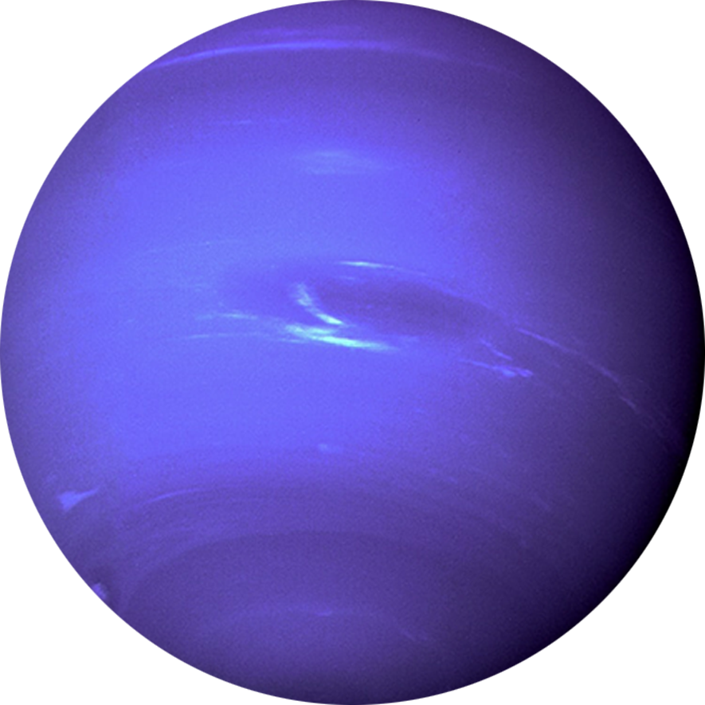

A principal lua de Netuno, Tritão, foi descoberta 17 dias depois de Netuno, e sua primeira
volta ao redor do Sol ocorreu em 2011.
A atmosfera de Netuno é composta por hidrogênio, hélio e metano, resultando em uma cor azulada
brilhante, semelhante a Urano.
Netuno foi observado pela primeira vez em 1612 por Galileu Galilei, mas sua descoberta só foi
confirmada em 1845 por Johann Gottfried Galle.
Netuno é invisível a olho nu devido à sua grande distância da Terra, e seu campo magnético é
cerca de 27 vezes mais potente que o da Terra.
O planeta Netuno é composto principalmente por água quente, amônia e metano em seu núcleo,
que tem aproximadamente o tamanho da Terra.
